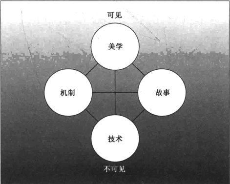

游戏由元素构成
你需要很熟悉地知道，你的游戏究竟是由什么构成，这些是如何组合在一起，是什么让它们运转起来。当游戏出现问题时，你需要指出真正的原因，然后想出最棒的解决方案，否则你的游戏就会死去。
四种基本元素

机制：游戏中的过程和规则。机制让游戏成为了游戏。
故事：游戏中事件展开的顺序。它可能是线性或预先设定的；也可能是有分支或随机发生的。
美学：游戏的外观、声音、气味、味道和感觉。美学对玩家的体验有最直接的影响。
技术：任何让你游戏实现的材质和交互都称为技术。
9号透镜：四种元素
观察你的游戏实际上是由什么构成的，单独考虑各种元素然后将它们统一看待。问自己这几个问题：
- 我的游戏设计使用了全部的四种元素吗？
- 我的设计能够通过增强一种或者多种分类的元素来获得提高吗？
- 四种元素是否和谐，互相作用并向同一个主题努力？
在观察你自己的体验的同时，思考产生体验的潜在原因。
10号透镜：全息设计
你必须一次性看到游戏的全部：四种元素和玩家体验，以及它们是怎样关联起来的。问你自己这几个问题：
- 游戏中哪一种元素产生了令人享受的体验？
- 游戏中的哪一种元素会让玩家在体验中分心？
- 怎样改变游戏元素来提高游戏体验？